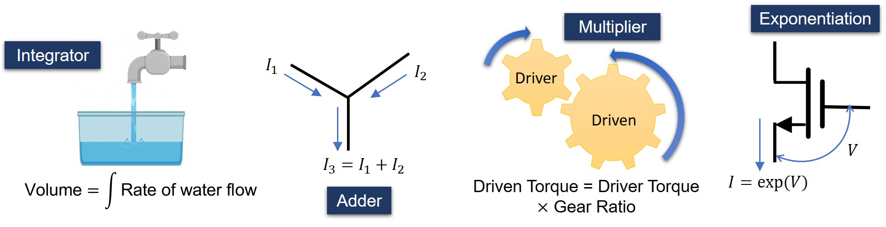
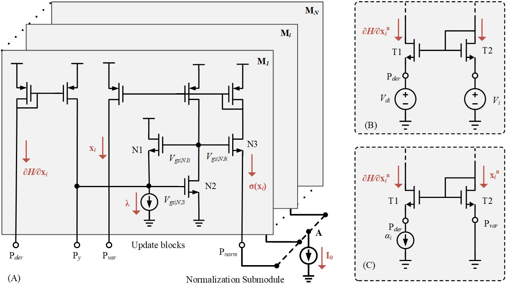
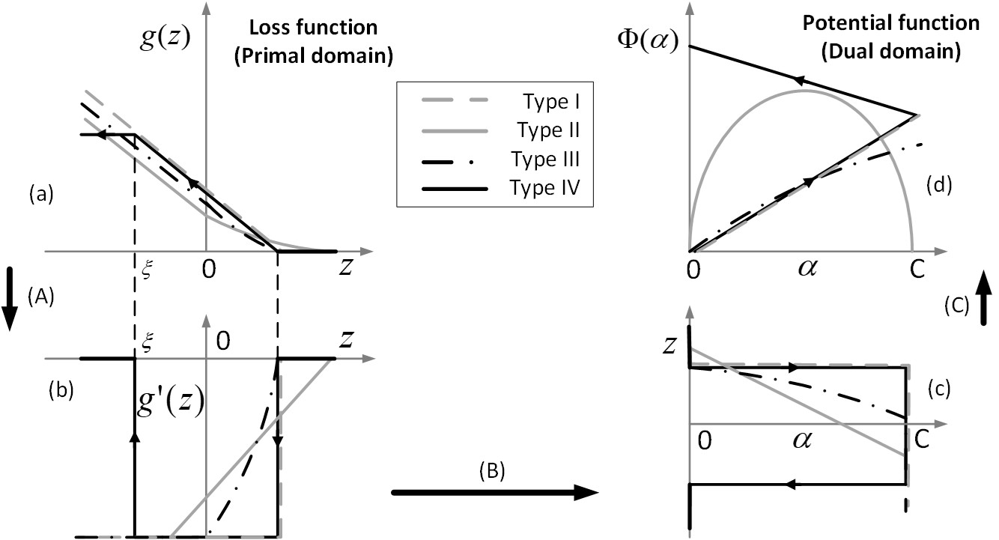
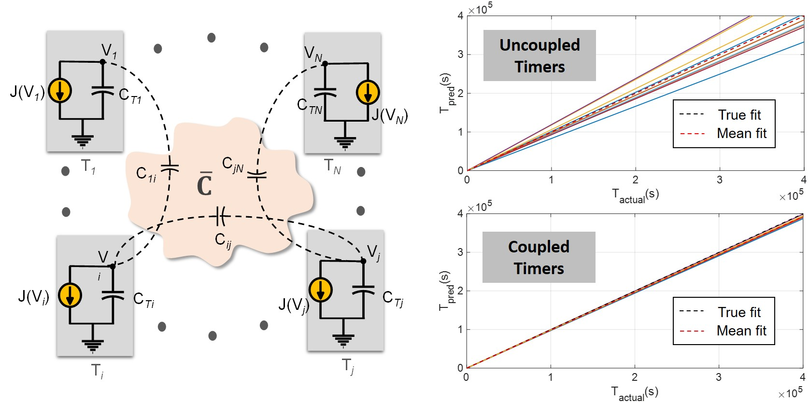
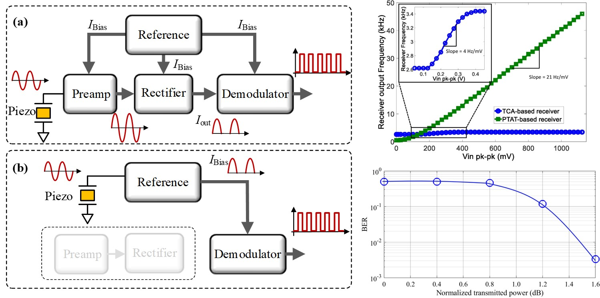
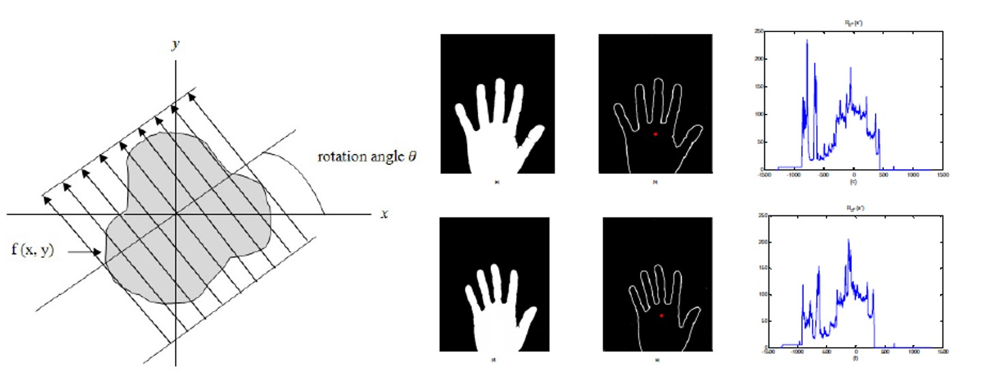

Continuous-time and Complex Growth Transforms for Analog Computing and Optimization

Any physical system, ranging from the simplest ones shown in the figure above to something as complex as the human brain, can be thought of as a special-purpose computer. These systems use the physics of devices and conservation laws to solve a wide range of computing problems. The central theme of my research is to explore if the fundamental laws of physics, like the principle of minimum energy and the principle of conservation of physical quantities can be used to design a dynamical system, the steady state of which encodes the solution to some optimization or machine learning problem.
In my thesis, I have explored how the Baum-Eagon inequality, which is a multiplicative algorithm originally proposed for maximizing polynomial functions with non-negative coefficients, can be extended to design dynamical systems operating over a conservation manifold (in the real or complex domain), which can then be applied for solving different optimization or learning tasks in an energy-efficient manner. Such such a system is inherently analog in nature, it automatically inherits the ability of analog computing paradigms to parallelly explore large parameter spaces in real-time at significantly lower levels of power dissipation compared to its digital counterparts. (paper1, paper2)
Please visit the project page for more details.
Continuous-time Analog Optimization Using Growth Transforms

In this work, we developed a novel continuous-time analog optimization circuit based on growth transforms. The circuit inherently enforces optimization constraints to converge to a steady-state solution corresponding to a local minimum of an objective function. The proposed circuit is also generic enough to encompass a multitude of objective functions simply by changing the external circuitry. (paper)
Generalized Support Vector Machines Using Growth Transforms

In this work, we extended the the domain of polynomial growth transforms to bounded real variables in order to develop a generalized support vector machine framework capable of handling both convex and quasi-convex loss functions. Experiments on synthetic and benchmark datasets showed that our algorithm is more scalable and yields better convergence compared to standard quadratic and nonlinear programming solvers. (paper)
Self-powered Time-keeping using Coupled Fowler-Nordheim Tunneling

In this paper, we propose a novel capacitively coupled network of Fowler Nordheim tunneling timers that can significantly improve the accuracy of time-keeping in the presence of both timer device and coupling capacitor mismatch. Such timers havebeen shown to reliably track time with an operating life-cycle greater than 2 years, and the coupling was shown to increase the accuracy by a factor of upto 20dB. (paper)
Compact and Energy-efficient Ultrasound Receiver using PTAT Reference Circuit

In this paper we show that by directly injecting the ultrasonic signal into a proportional-to-absolute-temperature (PTAT) reference circuit, the pre-amplification and rectification stages used in a conventional ultrasonic receiver can be eliminated which leads to a significant improvement in the system energy-efficiency. In our experiments on an aircraft grade aluminium plate, the improvement in input dynamic range was measured to be 25dB and sensitivity of the PTAT-based receiver was measured to be 21 Hz/mV when the biasing current is 16.67 nA. (paper)
Hand Shape Based Biometric Authentication Using Radon Transform and CRC

In this work, we proposed a novel method of biometric authentication using collaborative representation based classification (CRC) on the radon transform of hand images computed along an optimal direction. In this scheme, the feature vector of a query image is then coded over similarly processed training samples from all subjects in a dictionary (or classes) and identified as a member of the class which produces the least reconstruction residual. (paper1, paper2)